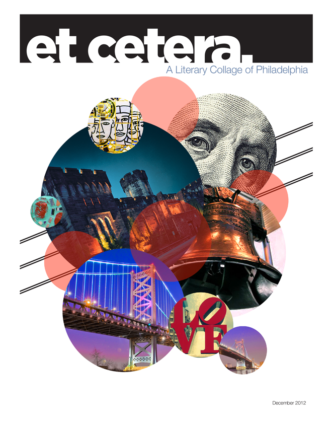

—
bh
Buddy Harris | New York-based Information Designer
—
et cetera. magazine
—
Led a team of 15 to complete this editorial et cetera. The subject matter revolved around different aspects of Philadelphia’s history. We created unique content and photography specifically for this project. The spreads shown are my individual contributions to the magazine. The articles were based on the history of the Philadelpiha Subway system; primarily focusing on the Broad Street and Market Franford line.
A4 format, typeface: Helvetica Neue LTD, Gotham
Printing was done by Replica in Philadelphia, PA.
The full publication of et cetera. may be viewed by clicking the image below.
—
Editorial
Print
—
2012
—
Buddy Harris, design
Philadelphia, PA
—
© 2013-2017 Buddy Harris Design